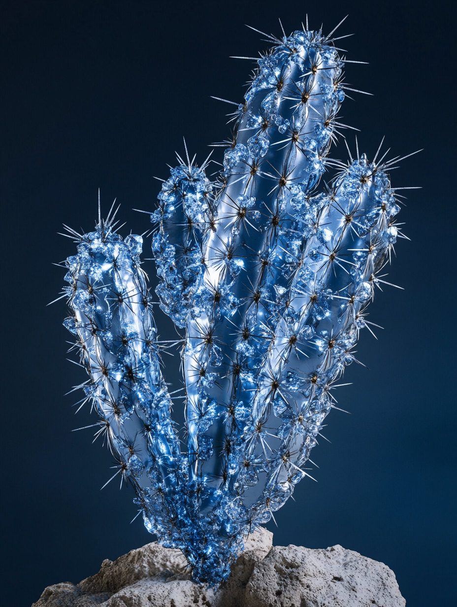
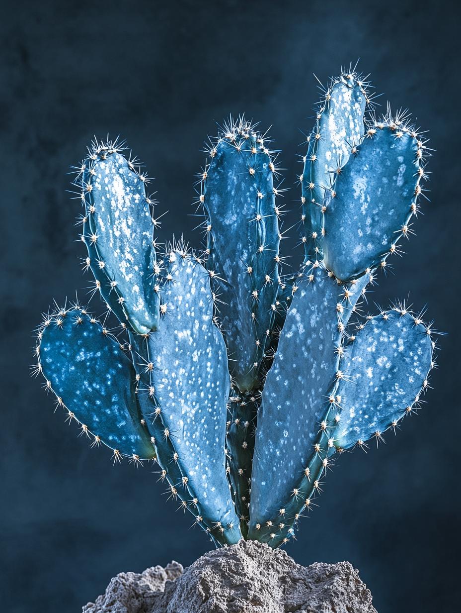

Plantae
└ Angiosperms
Eudicots └ Caryophyllales └ Cactaceae
└ Cactoideae └ Carnegiea
└ R. autorepairus
Eudicots └ Caryophyllales └ Cactaceae
└ Cactoideae └ Carnegiea
└ R. autorepairus
Le cactus colonnaire est une espèce de cactus arborescent appartenant au genre Carnegiea, que l'on trouve dans l'État de l'Arizona aux États-Unis et dans l'État de Sonora au Mexique. Le ReMetallium autorepairus, qui a évolué en 2145, a conservé la forme originale du cactus colonnaire (Cereus peruvianus) tout en développant une apparence unique reflétant ses caractéristiques d'assimilation métallique et d'adaptation aux environnements extrêmes. En termes de forme et de taille, le cactus colonnaire original peut atteindre un diamètre de 30 à 75 cm et une hauteur maximale de 15 m, avec une croissance lente. Le ReMetallium autorepairus varie en diamètre de tige de 20 à 80 cm en raison des dépôts métalliques, et maintient une hauteur de 12 à 18 m, mais avec une durabilité accrue grâce au renforcement métallique. La structure des branches conserve les caractéristiques de l'original, mais les branches recouvertes de métal ont évolué vers une ramification en « Y », augmentant l'efficacité de l'induction de la foudre.
En termes de structure de surface, une fine couche réticulée d'alliage fer/nickel s'est formée sur la surface des tiges et des épines, donnant une apparence gris-bleu ou brun-rouge brillante. Les zones endommagées exsudent un gel biométallique rouge-orange qui durcit, et avec le temps, s'harmonise avec la teinte environnante. Les épines ont développé un noyau conducteur interne qui joue le rôle de mini-paratonnerre. En ce qui concerne les fleurs et la reproduction, elles fleurissent toujours après 30 ans, mais les pétales ont formé une fine pellicule métallique semi-transparente qui bloque les rayons ultraviolets. Les fleurs blanches ou jaune pâle émettent une fluorescence bleue en réponse aux signaux électriques, utilisée pour la communication nocturne dans l'écosystème. Le système racinaire présente des fibres métalliques noires denses comme des cheveux à l'extrémité des racines, qui purifient les sols contaminés. De plus, des bio-câbles relient les racines entre elles, partageant énergie et informations avec les plantes environnantes.
Comme adaptation évolutive, les individus de plus de 10 m de haut concentrent des matériaux magnétiques au sommet de leur tige pour attirer la foudre, et l'énergie absorbée est transmise aux racines via des canaux d'électrolytes dans la tige. L'enveloppe métallique absorbe la chaleur pendant la journée et la libère la nuit, aidant à maintenir l'humidité du sol environnant. Même après sa mort, le squelette métallique ne se décompose pas pendant plus de 50 ans, fournissant un habitat à d'autres organismes. Cette évolution démontre la possibilité de plantes futuristes fusionnant la fonctionnalité du métal avec des structures biologiques, symbolisant la symbiose entre rigidité et flexibilité.
Un ReMetallium autorepairus adulte pèse environ 7 à 10 tonnes et peut stocker plusieurs tonnes d'eau. Les fruits du ReMetallium autorepairus sont également rouges avec une pulpe charnue, servant de nourriture aux chauves-souris et aux oiseaux comme le cactus orgue de Barbarie, et leurs excréments dispersent les graines sur une vaste zone.
En termes de structure de surface, une fine couche réticulée d'alliage fer/nickel s'est formée sur la surface des tiges et des épines, donnant une apparence gris-bleu ou brun-rouge brillante. Les zones endommagées exsudent un gel biométallique rouge-orange qui durcit, et avec le temps, s'harmonise avec la teinte environnante. Les épines ont développé un noyau conducteur interne qui joue le rôle de mini-paratonnerre. En ce qui concerne les fleurs et la reproduction, elles fleurissent toujours après 30 ans, mais les pétales ont formé une fine pellicule métallique semi-transparente qui bloque les rayons ultraviolets. Les fleurs blanches ou jaune pâle émettent une fluorescence bleue en réponse aux signaux électriques, utilisée pour la communication nocturne dans l'écosystème. Le système racinaire présente des fibres métalliques noires denses comme des cheveux à l'extrémité des racines, qui purifient les sols contaminés. De plus, des bio-câbles relient les racines entre elles, partageant énergie et informations avec les plantes environnantes.
Comme adaptation évolutive, les individus de plus de 10 m de haut concentrent des matériaux magnétiques au sommet de leur tige pour attirer la foudre, et l'énergie absorbée est transmise aux racines via des canaux d'électrolytes dans la tige. L'enveloppe métallique absorbe la chaleur pendant la journée et la libère la nuit, aidant à maintenir l'humidité du sol environnant. Même après sa mort, le squelette métallique ne se décompose pas pendant plus de 50 ans, fournissant un habitat à d'autres organismes. Cette évolution démontre la possibilité de plantes futuristes fusionnant la fonctionnalité du métal avec des structures biologiques, symbolisant la symbiose entre rigidité et flexibilité.
Un ReMetallium autorepairus adulte pèse environ 7 à 10 tonnes et peut stocker plusieurs tonnes d'eau. Les fruits du ReMetallium autorepairus sont également rouges avec une pulpe charnue, servant de nourriture aux chauves-souris et aux oiseaux comme le cactus orgue de Barbarie, et leurs excréments dispersent les graines sur une vaste zone.
